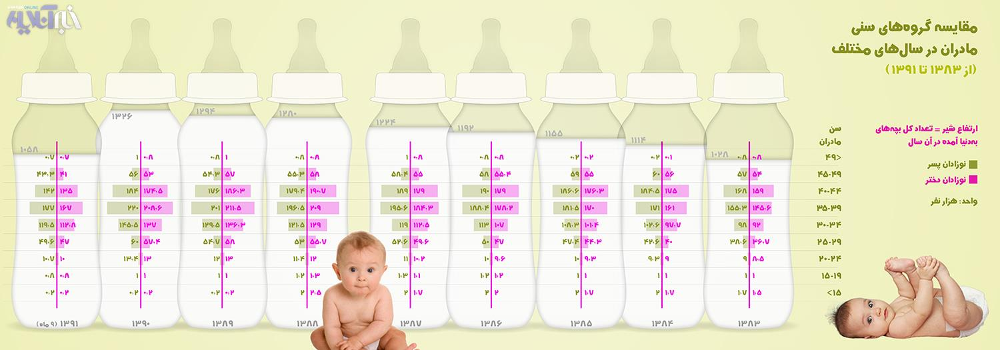

|
|
زنان ایرانی این سالها، چندسالگی مادر می شوند؟
چهار شنبه25 اردیبهشت 1392
خبرآنلاین - خانواده - در سالهای اخیر هر بار خبر از افزایش سن ازدواج رسیده، بلافاصله راجع به تبعات آن هشدار داده شده است؛ از هشدارها درباره آسیبهای اجتماعی گرفته تا نگرانیها درباره سلامت مادرها و فرزندانشان.
فهیمه حسنمیری: بر اساس آمارهای سازمان ثبت احوال، سن مادر شدن در حال افزایش است. سن به ثبت رسیده مادران هنگام تولد فرزندشان نشان میدهد، هرچه به سالهای اخیر نزدیک میشویم سن مادران روند صعودی را طی میکند که این مساله باعث شده کارشناسان راجع به ابعاد نگران کننده این قضیه هشدار دهند.
با نگاهی به نیمه پر لیوان، میتوان افزایش سن مادران را خوشبینانه دید و این مساله که مادر شدن در سنین پایین و به ویژه نوجوانی در حال کاهش است را به فال نیک گرفت، اما از سوی دیگر نباید از مشکلات احتمالی باردار شدن در سنین بالا برای مادران و فرزندانشان غافل شد.
به اعتقاد متخصصان مامایی و کارشناسان بیماریهای ژنتیک مناسبترین سن مادر برای بارداری، بین 20 تا 35 سال است و بارداریهای زیر 20 سال و بالای 35 سال، بارداریهای پرخطر نامیده میشود که سلامت کودک و مادر در معرض خطر ابتلا به بیماریهای مختلف قرار میگیرد. با افزایش سن مادر، احتمال تولد نوزادان با بیماریهای ژنتیکی و ناشی از اختلالات کروموزومی افزایش مییابد، همچنین بارداری در سنین بالاتر از 35 سال، احتمال مرگ ومیر مادر و نوزاد را افزایش میدهد و این جدا از بیماریهایی است که مادر ممکن است به دلیل بارداری و زایمان در سنین بالا به آن مبتلا شود.
با این حال و در شرایطی که سن ازدواج و سن بارداری زنان در حال افزایش است، به نظر میرسد لازم است به زنان آموزش داده شود تا با تغییر سبک زندگیشان، احتمال پیش آمدن عوارض گوناگون را برای خود و فرزندانشان کم کنند؛ بهبود مراقبتهای طبی و بهداشتی، مشاوره منظم با پزشک، تمرینات ورزشی و رژیم غذایی مناسب ازجمله مواردی هستند که باعث کاهش این خطرات میشوند.
نمودارهای زیر مقایسهای است بین گروههای سنی مادران در سالهای مختلف و روند افزایش یا کاهش آن بر اساس آمارهای سازمان ثبت احوال.
